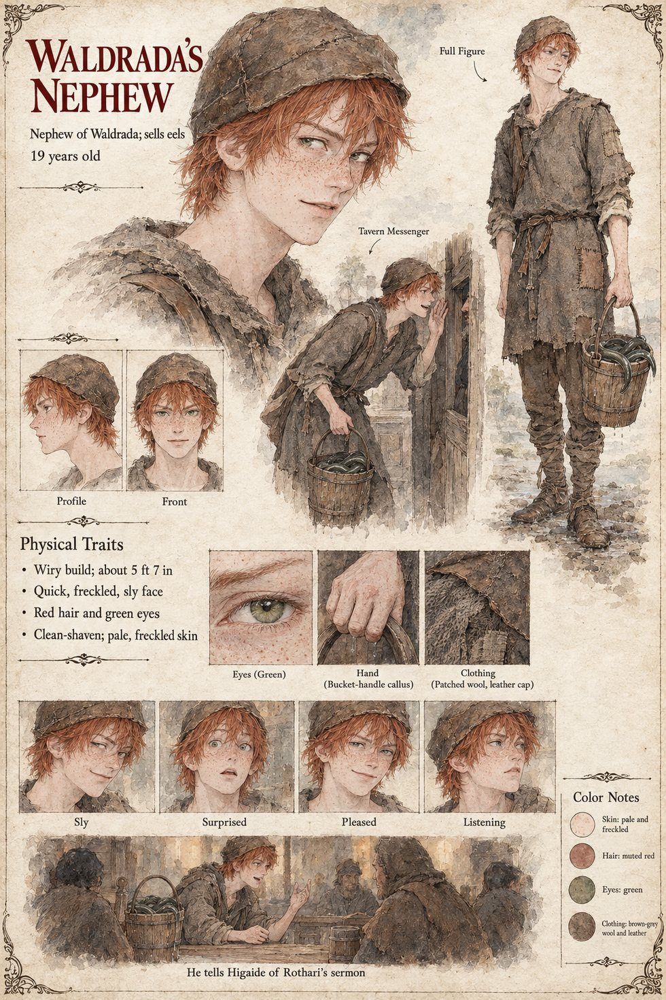

Waldrada's Nephew
Nephew of Waldrada, who keeps the Three Sheaves · sells eels · 19 years old by his sheet
The nephew of the widow Waldrada, who keeps the Three Sheaves, and an eel-seller with a bucket and a route through the Middle Town and the Low Market. The manuscript uses him twice, both times as a conduit. In the first winter the foreigner's habit of laying his palm flat on the anvil at dawn reaches the Three Sheaves by way of him, and within a month nine masters are standing at their own anvils before the cocks, counting to ten. Then, after the Hierarch Rothari has preached before a full cathedral on the text that Solan's fire is not to be addressed by strangers, he tells Tomobe no Higaide about it at dusk at the door of the ox-stall, in the slow ruined syllables of the lane-speech, with his hands moving to help the words. Higaide understands a good deal less of it than the boy supposes and a good deal more than anyone knows: he has stood in the moot-green of a village called Vilarnau on a winter morning and watched a baron's face change when a priest's letter was read to him, and he knows what it means when a man who holds authority over the gods begins to use the word stranger in a sermon. He thanks the boy with a bow and gives him a copper penny, which is a thing he has never done, and that night he leaves the forge.
A later chapter has a copper penny in the apprentice Lantfrid's left sleeve, kept there through the war and returned by Hiltrude to Higaide on the Uncounted Day as the coin he had once given a boy for the news of a sermon. The manuscript does not say how the coin passed from the one boy to the other; the page reports both and does not reconcile them. The apprentice's own sheet draws the penny at his left cuff.
The manuscript gives him a trade, an aunt and a bucket. The sheet's nineteen years, wiry 5 ft 7 in build, quick freckled sly face, red hair, green eyes, pale freckled skin and clean-shaven jaw are its own, with the patched brown-grey wool, the leather cap and the bucket of eels. Its panels, Tavern Messenger and He tells Higaide of Rothari's sermon, are the manuscript's two scenes; its expressions run Sly, Surprised, Pleased and Listening.